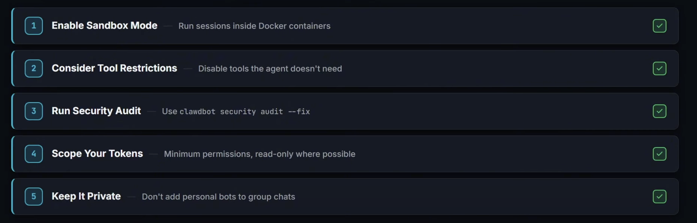

Your AI agent,
on every channel.
OpenClaw is a self-hosted gateway that connects WhatsApp, Telegram, Discord and iMessage to AI coding agents — running on your machine, under your rules.
What is OpenClaw?
OpenClaw is a self-hosted messaging gateway that connects WhatsApp, Telegram, Discord, and iMessage to AI coding agents.
- The gateway is a single long-running process on your machine that maintains persistent connections to messaging platforms.
- When a message arrives on any channel, the gateway routes it to an agent that can execute tools locally — file operations, shell commands, browser automation — letting you self-host the entire stack: you own the connections, the config, and the execution environment.
How is it different from Claude Code?
OpenClaw is fully self-hosted on your machine, with many more supported integrations.
Install & First Run
node -v$ openclaw onboard --install-daemon
The --install-daemon flag installs the gateway as a background service (launchd on macOS, systemd on Linux) — it starts on boot and keeps running, no terminal needed. The onboarding wizard walks you through config path, workspace location, and channel pairing.
Useful commands
TUI interface
The built-in terminal UI ships with many helpful commands.
Workspace & Memory
- Config, credentials and sessions live under
~/.openclaw/.
Git backup
.gitignore your secrets.Pinchboard
Moltbook, but for 𝕏!
Just tell your agent to sign up here.
Personal Assistant
Let's set up a personal assistant!
- Discord
Skills System
What skills are
- AgentSkills-compatible folders: each skill is a directory with SKILL.md (YAML frontmatter + instructions). They teach the agent how to use tools.
- Per-agent skills live in
<workspace>/skills— for that agent only. - Shared skills live in
~/.openclaw/skills(managed/local) — visible to all agents on the machine. - Set
user-invocable: trueto invoke skills manually.
Token impact
- Base overhead when ≥ 1 skill; per-skill cost (~97 chars + name/description/location). Roughly ~24 tokens per skill.
ClawHub
- Public skills registry: clawhub.com. Install:
clawhub install <slug>; update:clawhub update --all.
Exercise: write an email skill
SMTP_EMAILSMTP_PASSWORD(Google app password)
Multi-Agent Routing
Why multi-agent
- Isolation: different personas, permissions, workspaces (e.g. family vs work).
- Per-agent: workspace, sessions, auth profiles, sandbox, tool policy.
Example
> /agents
Per-agent access profiles
Security
- Sandbox: Docker-based isolation runs tool execution in a container, protecting your host. Set
sandbox.modetonon-main(sandbox everyone except your main session) orall. Usesandbox.scopefor container lifecycle (session,agent,shared) andworkspaceAccessto limit file access (none,ro,rw). - Tool policy: Use
tools.denyto block dangerous tools (likeexec,process,browser) for agents handling untrusted input. Elevated mode bypasses the sandbox and runs on the host — never grant it to unknown senders. - Browser control: the browser tool can navigate to any URL and interact with pages — high-risk for automation attacks. Restrict browser access by channel or sender allowlist; prefer the sandboxed browser.

Sandboxing
Optional Docker-based isolation for tool execution — the gateway itself stays on the host.
off · non-main · allsession · agent · shared (containers)none · ro · rw- Default image:
openclaw-sandbox:bookworm-slim; build withscripts/sandbox-setup.sh.
Tool policy
tools.allow/tools.deny; per-agentagents.list[].tools; sandbox tool policy (tools.sandbox.tools). Deny wins.- Elevated exec runs on the host and bypasses the sandbox.